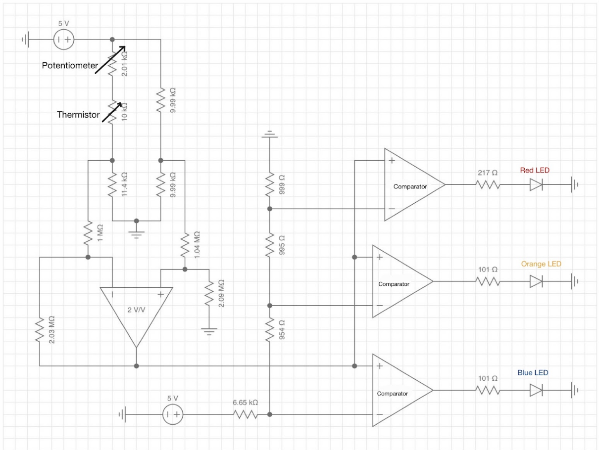
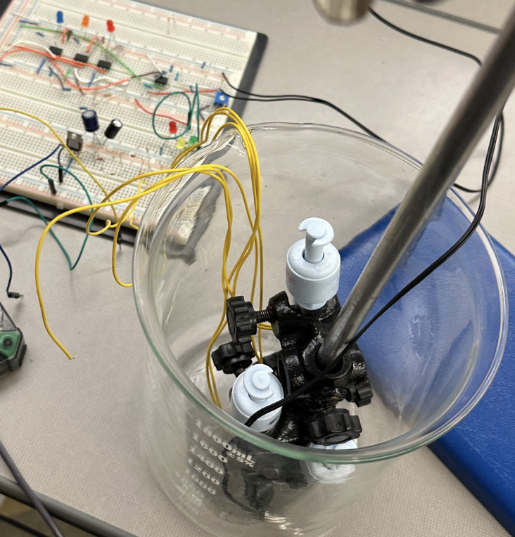

Project
Water Monitoring Breadboard Project
Overview
Breadboard prototype that uses purely analog components to indicate water level and temperature with LED's. The circuit also self-regulates water level with a pump that drains water to prevent spilling.
Circuit Components
Water Level Indicator
- Float switches set at three distinct levels.
- Each swtich has an LED conncected to indicate water level.
- The float switch closest to the top will trigger the drainage component.
Pump Drainage
- Start draining water when it reaches the final indicated level until the next level.
- Use RC delay and a power transistor to delay pump shutoff and generate enough current.
- Determine pump's flow rate to determine how long to run drainage.
Temperature Indicator
- Three distinct Temperature levels indicated by LED (cool, room temp, hot)
- Normalized room temperature with a thermistor incorportated in a wheatstone bridge.
- Created a relationship between voltage and temperature to set voltage thresholds to be read through comparators for lighting up each LED

Final circuit schematic

Float switch setup and physical breadboard circuit.
Testing/Results
- Achieved stable level detection at a repeatable threshold
- Verified a flow rate of 30.4 mL/s, requiring about 10 seconds of RC delay
- Room Temperature Resistance = 11.38 kΩ.
- Temperature levels measured to be (20, 40, 80)°C from the nominal voltages of (1.5, 1, 0.5) V respectively.
Challenges/Iterations
- Power dissipates as exponentially with time in the RC delay. An extra 7 seconds of delay was added to account for this.
- Could not reach a high enough voltage to power the LED's from the bridge, so the signal had to be amplified by 2 V/V.
- Position of the drainage tube deviated flow rate by 10%. The pump needed to be clamped in place for consistent results.
Next Steps
- Create an empirical relationship for Temp vs. Voltage to allow for LED's to light up at a specific desired temperature.
- Implement a 555 timer or logic gates to solve the current dissipation issue instead of the RC delay.